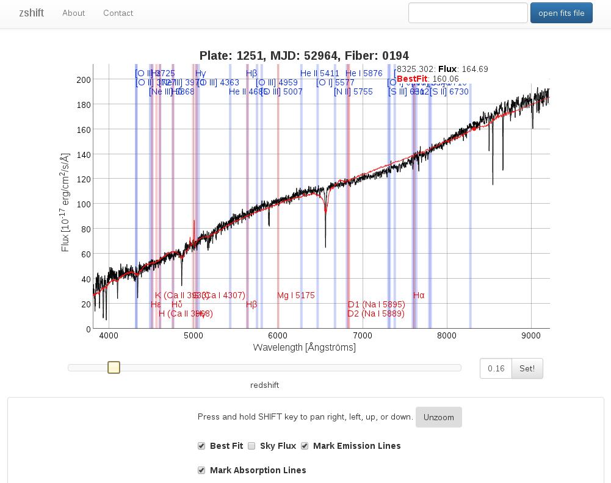

related tools
zshift
zshift zshift is a tool to manually check or determine redshifts of spectra.
The tool is mainly inspired by the interactive spectra view of the SDSS Sky-Server with added functionality for dynamic redshift change and the according redraw of the spectra lines in the background. The changes are commented in the source code of the zshift home page.

basic use
Click on the button named "open fits file" in the top right corner. Then find your fits file in your file system. Be aware that currently only new spec files from the SDSS (i.e. with names like spec-plateid-mjd-fiberid.fits) can be loaded. Those are the spec files of SDSS DR9 and later. If you want to load older spSpec-files, e.g. from SDSS DR7 and before, you have to find those in the spectra search using MJD, plate id and fiber id of the spectrum.
After loading the fits file the spectrum should be plotted. Then start shoving around the slider beneath the plotting area. In the background the spec lines should start to move according to the redshift change.
Alternatively, spectra can be loaded via setting of URL parameters without a fits file. To this end substitude the values of the parameters mjd, plateid and fiber in the URL https://aspect-ui.de/zshift/zshift.html?mjd=55359&fiber=408&plateid=4055
redshift fine tuning
Click on the handle of the redshift slider, then use your keyboard's left/right arrow keys. This gives you +/- 0.001 steps when adjusting the redshift.
third party code
- dygraphs for plotting
- fitsjs for fits file handling
- jquery for convenience
- bootstrap for the looks
- some elements and design from the SDSS interactive spectrum tool